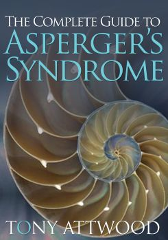
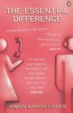

Jeroen Decates
Clinical Psychologist
| Home |
| What services are offered |
| Clinic and contact details |
| about Jeroen Decates |
| Asperger Syndrome Interest page |
Last updated: August 5, 2014

I respect that Asperger and Neurotypical communication styles are fundamentally different.
|
Recommended external links:
ASPIA is a Sydney - NSW - Australia - based support group for partners of family members of people with Asperger run entirely by volunteers.
Great starting point for research on anything Asperger:
Asperger syndrome on Wikipedia
A syndrome for success an article by Fran Malloy
in the Sydney Morning Herald
Recommended reading:
For Teachers:
Karen Williams excellent reference article on Asperger in the classroom as featured on the OASIS website is a must and full off useful teaching suggestions. Pass on to your child's teachers!

Australian psychologist and author Tony Atwood's website is a great source of information on all things Asperger. For further research scroll down to the link to Web Sites for People with Autism/Asperger's Syndrome.
For a "Bordertown" perspective on Asperger:
The Essential Difference: Men, Women and the Extreme Male Brain by Simon Baron-Cohen
We all appreciate that there are differences in the typical psychology of men and women. Yet underlying these subtle differences, Simon Baron-Cohen believes, there
is one essential difference, and it affects everything we do: Men have a tendency to analyse and construct systems while women are inclined to empathise. With fresh evidence for these claims, Baron-Cohen explores how these sex differences arise more from biological than cultural causes and shows us how each brain type contributes in various ways to what we think of as "intelligence." Emphasising that not all men have the typically "male" brain, which he calls Type "S," and not all women have the typically female brain (Type "E"), Baron-Cohen explores the cutting-edge research that illuminates our individual differences and explains why a truly "balanced" brain is so rare. Filled with surprising and illuminating case studies, many from Baron-Cohen's own clinical practice, The Essential Difference moves beyond the stereotypes to elucidate over twenty years of groundbreaking research. From gossip to aggression, Baron-Cohen dissects each brain type and even presents a new theory that autism (as well as its close relative, Asperger's syndrome) can be understood as an extreme form of the male brain. Smart and engaging, this is the thinking person's guide to gender difference, a book that promises to change the conversation about-and between-men and women.